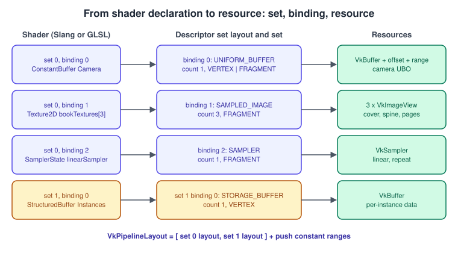
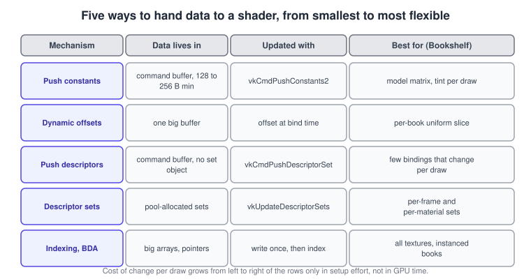
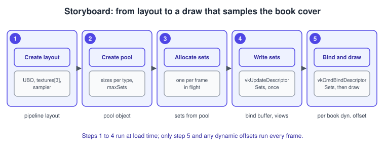
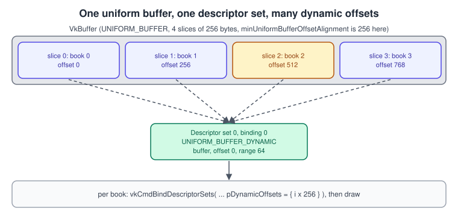
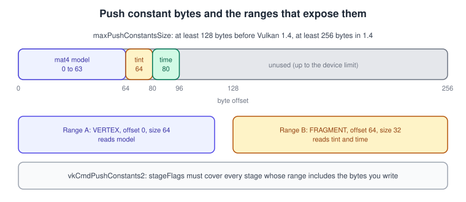

Descriptors and Push Constants in Vulkan
|
This content was generated with the assistance of AI and should be verified against the official documentation before being relied on in production. |
A shader cannot name a buffer or a texture the way C++ code names a variable. Vulkan gives it three doors instead: a descriptor (a small record that points at a buffer, an image view or a sampler), a block of push constants (a few bytes written straight into the command buffer) and, with an extension, raw device addresses. This page covers the first two in depth, from the layouts that describe what a pipeline expects to the commands that bind real resources before a draw. The third door, together with descriptor indexing, descriptor buffers and descriptor heaps, is in Bindless: Descriptor Indexing, Buffer Device Address, Descriptor Buffer and Descriptor Heap.
The facts on this page were checked in November 2026 against the Vulkan 1.4 specification (headers 1.4.3xx, LunarG SDK 1.4.363.0) and
the Khronos Vulkan Guide and Tutorial. Everything marked as core is available in Vulkan 1.3 unless stated otherwise; push descriptors,
vkCmdPushConstants2 and vkCmdBindDescriptorSets2 are core in Vulkan 1.4 and are available on 1.3 devices as the extensions
VK_KHR_push_descriptor and VK_KHR_maintenance6. The code is C++20 using Vulkan-Hpp (the RAII flavour, vulkan_raii.hpp) and shows
Slang shaders with GLSL as the alternative. The running example is the Vulkan Bookshelf: after the VMA-staged vertex buffer, the book
gets a camera uniform buffer, a model matrix as a push constant and three textures (cover, spine, pages) behind one descriptor set.
The C++ conventions are explained in Vulkan-Hpp, RAII and C++ Bindings.
The mental model
A descriptor is a handle-sized, driver-specific record. You never see its bytes: you describe a resource with a
VkDescriptorBufferInfo (buffer, offset, range) or a VkDescriptorImageInfo (sampler, image view, image layout) and the driver writes
the descriptor into a descriptor set. Descriptors are grouped by type (uniform buffer, storage buffer, sampled image, sampler,
combined image sampler, storage image, input attachment, acceleration structure and so on) and organised in two levels:
-
a set is the unit you bind with one command and the unit shaders address with
set = Nin GLSL or[[vk::binding(binding, set)]]in HLSL and Slang -
a binding inside a set has a binding number, a descriptor type, an array size (
descriptorCount) and the shader stages that may read it

Three objects carry the contract, and they are easy to confuse:
| Object | Created with | Role |
|---|---|---|
|
|
The shape of one set: its bindings, types, counts, stage flags and optional immutable samplers. It holds no resources. |
|
|
An ordered list of set layouts (index in the list is the set number) plus push constant ranges. Pipelines are created with it and the bind commands take it. |
|
|
One instance of a layout holding real descriptors. Written with |
If you know OpenGL, the closest relatives are uniform blocks and texture units (Uniforms, UBOs and SSBOs), and in Metal the argument tables and argument buffers (Argument Buffers and Bindless Resources). The reason Vulkan asks for the extra objects is the one described in Explicit vs Implicit Graphics APIs: validating and translating bindings is done once, at layout and set creation, not on every draw.
Choosing a mechanism
Vulkan offers several ways to feed a shader. They differ in how much data they carry, who pays for an update and how much the driver must do per draw.

The rest of the page explains each box. The decision is not exclusive: the Bookshelf uses a per-frame set for the camera, a per-material set for the three textures, a push constant for the model matrix and, later, indexing for the instanced shelf of books.
Descriptor set layouts
A layout is a list of VkDescriptorSetLayoutBinding:
| Field | Meaning | Notes |
|---|---|---|
|
The binding number the shader uses. |
Numbers need not be contiguous, but keeping them dense makes multi-binding writes possible. |
|
|
Separate |
|
Array size of the binding; 1 for a plain resource. |
An array indexed in the shader ( |
|
Which stages may access the binding ( |
Accessing a binding from a stage that is not listed is an error that validation reports. |
|
Samplers baked into the layout for |
The sampler never changes, so the driver can embed it; you never write that binding. Required for YCbCr samplers. |
VkDescriptorSetLayoutCreateInfo::flags selects variants: VK_DESCRIPTOR_SET_LAYOUT_CREATE_PUSH_DESCRIPTOR_BIT makes a layout a push
descriptor layout (see below), VK_DESCRIPTOR_SET_LAYOUT_CREATE_UPDATE_AFTER_BIND_POOL_BIT is for update-after-bind pools, and
VK_DESCRIPTOR_SET_LAYOUT_CREATE_DESCRIPTOR_BUFFER_BIT_EXT is for descriptor buffers. A chained VkDescriptorSetLayoutBindingFlagsCreateInfo
adds per-binding flags (partially bound, variable count, update after bind); those belong to the bindless page.
The Bookshelf shader
The first listing shows the shader side. Slang is the primary language of the Khronos tutorial; the [[vk::binding]] and
[[vk::push_constant]] attributes are the HLSL spelling that Slang also accepts. Matrix layout is a compiler option, so the CPU side
and the shader must agree (see Shader Memory Layout for std140, std430 and scalar rules).
// book.slang
struct Camera
{
float4x4 view;
float4x4 proj;
};
struct BookPush
{
float4x4 model; // bytes 0 to 63, read by the vertex stage
float4 tint; // bytes 64 to 79, read by the fragment stage
};
[[vk::binding(0, 0)]] ConstantBuffer<Camera> camera; // set 0, per frame
[[vk::binding(0, 1)]] Texture2D bookTextures[3]; // set 1, per material: cover, spine, pages
[[vk::binding(1, 1)]] SamplerState linearRepeat;
[[vk::push_constant]] ConstantBuffer<BookPush> pc; // push constants, per draw
struct VSInput { float3 position : POSITION; float2 uv : TEXCOORD0; uint part : TEXCOORD1; };
struct VSOutput { float4 clip : SV_Position; float2 uv : TEXCOORD0; nointerpolation uint part : TEXCOORD1; };
[shader("vertex")]
VSOutput vsMain(VSInput input)
{
VSOutput o;
float4 world = mul(pc.model, float4(input.position, 1.0));
o.clip = mul(camera.proj, mul(camera.view, world));
o.uv = input.uv;
o.part = input.part;
return o;
}
[shader("fragment")]
float4 fsMain(VSOutput input) : SV_Target
{
// part is 0 for cover, 1 for spine, 2 for pages; it is constant per face, so this indexing is dynamically uniform
float4 texel = bookTextures[input.part].Sample(linearRepeat, input.uv);
return texel * pc.tint;
}Source: Vulkan Guide: HLSL in Vulkan
The same declarations in GLSL, compiled with glslc or glslangValidator:
#version 460
layout(set = 0, binding = 0) uniform Camera { mat4 view; mat4 proj; } camera;
layout(set = 1, binding = 0) uniform texture2D bookTextures[3];
layout(set = 1, binding = 1) uniform sampler linearRepeat;
layout(push_constant, std430) uniform BookPush { mat4 model; layout(offset = 64) vec4 tint; } pc;
layout(location = 0) in vec3 inPosition;
layout(location = 1) in vec2 inUv;
layout(location = 2) in uint inPart;
layout(location = 0) out vec2 vUv;
layout(location = 1) flat out uint vPart;
void main()
{
gl_Position = camera.proj * camera.view * pc.model * vec4(inPosition, 1.0);
vUv = inUv;
vPart = inPart;
}Source: Vulkan Guide: Push Constants
In GLSL the sampled image and the sampler are separate objects (texture2D plus sampler) and are combined at the call site as
texture(sampler2D(bookTextures[part], linearRepeat), vUv) in the fragment shader. Declaring a sampler2D gives a combined image
sampler instead.
Creating the layouts, pool and sets
The pipeline layout
The pipeline layout lists set layouts in set-number order and push constant ranges. Two pipelines whose layouts agree on the first N sets are compatible for those sets, so binding set 0 once survives a pipeline change. This is the reason to order sets by update frequency: the least frequently changing resources go in the lowest set numbers, and binding a higher set never disturbs a lower one. A common convention, used by the Bookshelf, is set 0 per frame, set 1 per material, set 2 per object (when it is not a push constant).
Core Vulkan 1.0 guarantees maxBoundDescriptorSets of at least 4; Vulkan 1.4 raised the required minimum to 7. Do not rely on that many: older devices may report only 4, and each bound set has a cost.
A complete example
The listing creates the two layouts, the pipeline layout, a pool, two per-frame sets and one material set. It assumes the buffers, image
views and sampler already exist. VULKAN_HPP_NO_CONSTRUCTORS is defined so that structures are filled with C++20 designated initializers,
as the Khronos tutorial does.
#define VULKAN_HPP_NO_CONSTRUCTORS
#include <vulkan/vulkan_raii.hpp>
#include <array>
#include <vector>
constexpr uint32_t kFramesInFlight = 2;
struct BookshelfDescriptors
{
vk::raii::DescriptorSetLayout frameLayout{nullptr};
vk::raii::DescriptorSetLayout materialLayout{nullptr};
vk::raii::PipelineLayout pipelineLayout{nullptr};
vk::raii::DescriptorPool pool{nullptr};
std::vector<vk::raii::DescriptorSet> frameSets; // one per frame in flight
vk::raii::DescriptorSet materialSet{nullptr};
};
BookshelfDescriptors createDescriptors(vk::raii::Device &device,
std::array<vk::Buffer, kFramesInFlight> cameraUbos,
std::array<vk::ImageView, 3> bookViews,
vk::Sampler linearRepeat)
{
BookshelfDescriptors d;
// Set 0: the camera, read by the vertex stage
vk::DescriptorSetLayoutBinding cameraBinding{
.binding = 0, .descriptorType = vk::DescriptorType::eUniformBuffer,
.descriptorCount = 1, .stageFlags = vk::ShaderStageFlagBits::eVertex};
d.frameLayout = vk::raii::DescriptorSetLayout(
device, vk::DescriptorSetLayoutCreateInfo{.bindingCount = 1, .pBindings = &cameraBinding});
// Set 1: three textures and one sampler, read by the fragment stage
std::array<vk::DescriptorSetLayoutBinding, 2> materialBindings{{
{.binding = 0, .descriptorType = vk::DescriptorType::eSampledImage,
.descriptorCount = 3, .stageFlags = vk::ShaderStageFlagBits::eFragment},
{.binding = 1, .descriptorType = vk::DescriptorType::eSampler,
.descriptorCount = 1, .stageFlags = vk::ShaderStageFlagBits::eFragment,
.pImmutableSamplers = &linearRepeat}}}; // baked into the layout: never written
d.materialLayout = vk::raii::DescriptorSetLayout(
device, vk::DescriptorSetLayoutCreateInfo{
.bindingCount = static_cast<uint32_t>(materialBindings.size()),
.pBindings = materialBindings.data()});
// Pipeline layout: two sets and the push constant ranges of the shader above
std::array<vk::DescriptorSetLayout, 2> setLayouts{*d.frameLayout, *d.materialLayout};
std::array<vk::PushConstantRange, 2> ranges{{
{.stageFlags = vk::ShaderStageFlagBits::eVertex, .offset = 0, .size = 64},
{.stageFlags = vk::ShaderStageFlagBits::eFragment, .offset = 64, .size = 16}}};
d.pipelineLayout = vk::raii::PipelineLayout(device, vk::PipelineLayoutCreateInfo{
.setLayoutCount = static_cast<uint32_t>(setLayouts.size()), .pSetLayouts = setLayouts.data(),
.pushConstantRangeCount = static_cast<uint32_t>(ranges.size()), .pPushConstantRanges = ranges.data()});
// Pool: capacity is declared per descriptor type, plus a maximum number of sets
std::array<vk::DescriptorPoolSize, 3> sizes{{
{vk::DescriptorType::eUniformBuffer, kFramesInFlight},
{vk::DescriptorType::eSampledImage, 3},
{vk::DescriptorType::eSampler, 1}}};
d.pool = vk::raii::DescriptorPool(device, vk::DescriptorPoolCreateInfo{
.maxSets = kFramesInFlight + 1,
.poolSizeCount = static_cast<uint32_t>(sizes.size()), .pPoolSizes = sizes.data()});
// Allocate: one frame set per frame in flight, plus the material set
std::vector<vk::DescriptorSetLayout> allocLayouts(kFramesInFlight, *d.frameLayout);
allocLayouts.push_back(*d.materialLayout);
vk::DescriptorSetAllocateInfo alloc{.descriptorPool = *d.pool,
.descriptorSetCount = static_cast<uint32_t>(allocLayouts.size()), .pSetLayouts = allocLayouts.data()};
std::vector<vk::raii::DescriptorSet> sets = device.allocateDescriptorSets(alloc);
d.materialSet = std::move(sets.back());
sets.pop_back();
d.frameSets = std::move(sets);
// Write: every write names a destination set, binding, array element and the resource info
std::array<vk::DescriptorBufferInfo, kFramesInFlight> bufferInfos;
std::array<vk::WriteDescriptorSet, kFramesInFlight + 1> writes;
for (uint32_t i = 0; i < kFramesInFlight; ++i)
{
bufferInfos[i] = {.buffer = cameraUbos[i], .offset = 0, .range = 2 * sizeof(float) * 16};
writes[i] = {.dstSet = *d.frameSets[i], .dstBinding = 0, .dstArrayElement = 0, .descriptorCount = 1,
.descriptorType = vk::DescriptorType::eUniformBuffer, .pBufferInfo = &bufferInfos[i]};
}
std::array<vk::DescriptorImageInfo, 3> imageInfos;
for (size_t i = 0; i < 3; ++i)
imageInfos[i] = {.sampler = nullptr, .imageView = bookViews[i],
.imageLayout = vk::ImageLayout::eShaderReadOnlyOptimal};
writes[kFramesInFlight] = {.dstSet = *d.materialSet, .dstBinding = 0, .dstArrayElement = 0, .descriptorCount = 3,
.descriptorType = vk::DescriptorType::eSampledImage, .pImageInfo = imageInfos.data()};
device.updateDescriptorSets(writes, {});
return d;
}Recording the draw binds both sets, pushes the per-draw bytes and draws:
void drawBook(vk::raii::CommandBuffer &cmd, const BookshelfDescriptors &d, uint32_t frame,
const float model[16], const float tint[4], uint32_t indexCount)
{
std::array<vk::DescriptorSet, 2> sets{*d.frameSets[frame], *d.materialSet};
cmd.bindDescriptorSets(vk::PipelineBindPoint::eGraphics, *d.pipelineLayout, 0, sets, {});
// Vulkan 1.4 / VK_KHR_maintenance6: the structure form names the layout and both stages in one call
vk::PushConstantsInfo vertexPart{.layout = *d.pipelineLayout, .stageFlags = vk::ShaderStageFlagBits::eVertex,
.offset = 0, .size = 64, .pValues = model};
cmd.pushConstants2(vertexPart);
vk::PushConstantsInfo fragmentPart{.layout = *d.pipelineLayout, .stageFlags = vk::ShaderStageFlagBits::eFragment,
.offset = 64, .size = 16, .pValues = tint};
cmd.pushConstants2(fragmentPart);
cmd.drawIndexed(indexCount, 1, 0, 0, 0);
}Pools
A VkDescriptorPool is a block of descriptor memory from which sets are allocated. VkDescriptorPoolCreateInfo declares maxSets and,
per descriptor type, a count in pPoolSizes. The common pitfalls follow from that:
-
The pool is exhausted when either the set count or any type count is used up;
vkAllocateDescriptorSetsthen fails withVK_ERROR_OUT_OF_POOL_MEMORY(or fragmentation errors). Count every descriptor, including each array element. -
Sets cannot be freed individually unless the pool was created with
VK_DESCRIPTOR_POOL_CREATE_FREE_DESCRIPTOR_SET_BIT. The cheap and fast pattern is the opposite: one pool per frame in flight, andvkResetDescriptorPoolwhen that frame’s fence or timeline value says the GPU has finished with it. Resetting frees all its sets at once with no per-set cost. -
A pool used with update-after-bind layouts needs
VK_DESCRIPTOR_POOL_CREATE_UPDATE_AFTER_BIND_BIT; layout and pool flags must match. -
Allocating sets in the render loop is slow on some drivers. Allocate at load time and rewrite, or reset and reallocate per frame in one batch.
Writing descriptors
vkUpdateDescriptorSets takes an array of VkWriteDescriptorSet (set, binding, first array element, count, type and one of
pImageInfo, pBufferInfo, pTexelBufferView or a chained structure) and an array of VkCopyDescriptorSet that copies between sets.
One write may span consecutive bindings: when the count exceeds the binding’s array size, writing continues in the next binding, which
is why binding numbers must be dense and of compatible type for such writes.
The rules that cause most validation errors:
-
A descriptor set must not be updated while a submitted command buffer that uses it is pending, unless the binding has the update-after-bind flag (bindless page). Duplicate the set per frame in flight, which is what the example does for the camera.
-
VkDescriptorImageInfo::imageLayoutmust be the layout the image will be in when the shader reads it, usuallyVK_IMAGE_LAYOUT_SHADER_READ_ONLY_OPTIMAL; the barrier that puts it there is in Synchronization and sync2. -
The buffer needs the matching usage (
UNIFORM_BUFFER_BITorSTORAGE_BUFFER_BIT), and the offset must satisfyminUniformBufferOffsetAlignmentorminStorageBufferOffsetAlignment. -
The range of a uniform buffer must not exceed
maxUniformBufferRange, which Vulkan 1.4 raised from 16384 to 65536 bytes as a required minimum. Larger data belongs in a storage buffer.

Descriptor update templates
When the same layout of descriptors is rewritten often (every frame for hundreds of objects), assembling VkWriteDescriptorSet arrays
costs CPU time. A descriptor update template (core in Vulkan 1.1) stores, once, where each descriptor’s info lives inside an
application-owned struct; vkUpdateDescriptorSetWithTemplate then takes a pointer to that struct and no VkWriteDescriptorSet
objects are built.
// The application-side struct that mirrors one material set
struct MaterialUpdate
{
vk::DescriptorImageInfo images[3];
};
vk::DescriptorUpdateTemplateEntry entry{
.dstBinding = 0, .dstArrayElement = 0, .descriptorCount = 3,
.descriptorType = vk::DescriptorType::eSampledImage,
.offset = offsetof(MaterialUpdate, images), .stride = sizeof(vk::DescriptorImageInfo)};
vk::DescriptorUpdateTemplateCreateInfo templateInfo{
.descriptorUpdateEntryCount = 1, .pDescriptorUpdateEntries = &entry,
.templateType = vk::DescriptorUpdateTemplateType::eDescriptorSet,
.descriptorSetLayout = *d.materialLayout};
vk::raii::DescriptorUpdateTemplate materialTemplate(device, templateInfo);
MaterialUpdate update{}; // fill update.images[i] with view and layout
device.updateDescriptorSetWithTemplate(*d.materialSet, *materialTemplate, &update);A template created with the push descriptors template type can also feed vkCmdPushDescriptorSetWithTemplate, which is the push
descriptor equivalent; that form needs the pipeline bind point, layout and set number in the create info.
Dynamic offsets
A uniform buffer holding the data of many objects wastes descriptor sets if each object gets its own set. Dynamic descriptor types
(VK_DESCRIPTOR_TYPE_UNIFORM_BUFFER_DYNAMIC and VK_DESCRIPTOR_TYPE_STORAGE_BUFFER_DYNAMIC) keep one descriptor that covers a fixed
range and let vkCmdBindDescriptorSets add an offset at bind time.

The rules from the specification:
-
The command takes one offset per dynamic descriptor of the bound sets, consumed in order of set, then binding, then array element.
dynamicOffsetCountmust equal the total number of dynamic descriptors. -
Offsets for uniform buffers must be multiples of
minUniformBufferOffsetAlignment, for storage buffers ofminStorageBufferOffsetAlignment. Pad the per-object stride up to the alignment:
\[ \text{ stride } = \lceil s / a \rceil \cdot a \]
where \( s \) is the size of one object’s data and \( a \) the alignment, commonly 64 or 256 bytes on desktop hardware and often 16 to 256
elsewhere; query it from VkPhysicalDeviceLimits.
-
The descriptor’s own offset plus the dynamic offset plus the range must stay inside the buffer. If the descriptor range is
VK_WHOLE_SIZE, the dynamic offset must be 0, so give dynamic bindings an explicit range. -
Dynamic descriptors count against separate limits (
maxDescriptorSetUniformBuffersDynamic,maxDescriptorSetStorageBuffersDynamic), which are small.
// 4 books, one UBO of 4 slices; the set was written once with range = sizeof(BookUniform)
const vk::DeviceSize alignment = physicalDevice.getProperties().limits.minUniformBufferOffsetAlignment;
const vk::DeviceSize stride = (sizeof(BookUniform) + alignment - 1) / alignment * alignment;
for (uint32_t i = 0; i < 4; ++i)
{
uint32_t dynamicOffset = static_cast<uint32_t>(i * stride);
cmd.bindDescriptorSets(vk::PipelineBindPoint::eGraphics, *pipelineLayout, 2, *bookSet, dynamicOffset);
cmd.drawIndexed(indexCount, 1, 0, 0, 0);
}For more than a handful of objects the better design is to store all object data in one storage buffer and index it with a push constant
or SV_InstanceID, covered on the bindless page. In 1.4, vkCmdBindDescriptorSets2 takes a VkBindDescriptorSetsInfo structure and
behaves like the classic command otherwise.
Push constants
Push constants are the fastest way to give a shader a few values: the bytes are copied into the command buffer, no buffer, set or barrier is needed, and the driver typically puts them in registers or a small constant bank. They are ideal for a model matrix, a material index, a time value or a per-draw flag.

Declaring and writing them
| Piece | Details |
|---|---|
|
|
|
Core since 1.0: |
|
Core in 1.4 (extension |
|
At least 128 bytes in Vulkan 1.0 to 1.3, at least 256 bytes in 1.4. Some desktop GPUs report 256 or more; many mobile GPUs report 128. Budget for 128 if you target mobile. |
Shader side |
GLSL |
Behaviour to know:
-
Updating is incremental inside one command buffer: each call changes only the bytes it covers, so earlier values persist.
-
The values are tied to the pipeline layout, not to the descriptor sets. Binding descriptor sets neither resets nor invalidates them. A draw is valid only if the layout used by the last push and the layout of the bound pipeline have identical push constant ranges.
-
A pipeline layout may declare a range the shader never reads; that is valid.
-
Values do not survive between command buffers; re-push at the start of every command buffer.
-
Pushing is cheap but not free: hundreds of thousands of small pushes can stall command processing on some GPUs. When every object needs more than a few bytes, push one index and read the rest from a buffer.
// Classic form, available in every Vulkan version: the fragment range of the layout above (bytes 64 to 79)
float tint[4] = {1.0f, 0.9f, 0.8f, 1.0f};
cmd.pushConstants<float>(*pipelineLayout, vk::ShaderStageFlagBits::eFragment, 64, tint);Source: Vulkan Guide: Push Constants
The rule for stageFlags is symmetric: every stage whose range covers any pushed byte must be named, and a stage whose range does not
cover those bytes must not be. With the two ranges above, pushing bytes 0 to 79 in one call needs both stages, while pushing only the
tint needs just the fragment stage. Choose one design and keep the shader and the pipeline layout in agreement; validation reports a
stage that reads bytes outside its declared range.
Push descriptors
Push descriptors put descriptors straight into the command buffer instead of into a pool-allocated set. The set in question is a
special layout with VK_DESCRIPTOR_SET_LAYOUT_CREATE_PUSH_DESCRIPTOR_BIT; at most one set per pipeline layout may be a push set. You
then call vkCmdPushDescriptorSet with an array of VkWriteDescriptorSet (the dstSet member is ignored). There are no pools, no
set objects and no lifetime to manage, and rewriting before every draw is the intended use.
Status: the extension VK_KHR_push_descriptor was promoted to core in Vulkan 1.4 (December 2024). Core usage requires the pushDescriptor
feature in VkPhysicalDeviceVulkan14Features; the extension spelling is vkCmdPushDescriptorSetKHR. maxPushDescriptors is at least
32 in Vulkan 1.4 (it was 16 for the extension). Check the feature on 1.3 devices before relying on it.
// Layout: set 0 is a push set with one uniform buffer binding
vk::DescriptorSetLayoutBinding binding{.binding = 0, .descriptorType = vk::DescriptorType::eUniformBuffer,
.descriptorCount = 1, .stageFlags = vk::ShaderStageFlagBits::eVertex};
vk::raii::DescriptorSetLayout pushLayout(device, vk::DescriptorSetLayoutCreateInfo{
.flags = vk::DescriptorSetLayoutCreateFlagBits::ePushDescriptor, .bindingCount = 1, .pBindings = &binding});
// Per draw: no pool, no set object
vk::DescriptorBufferInfo info{.buffer = bookUbo, .offset = bookOffset, .range = sizeof(BookUniform)};
vk::WriteDescriptorSet write{.dstBinding = 0, .dstArrayElement = 0, .descriptorCount = 1,
.descriptorType = vk::DescriptorType::eUniformBuffer, .pBufferInfo = &info};
cmd.pushDescriptorSet(vk::PipelineBindPoint::eGraphics, *pipelineLayout, 0, write);
cmd.drawIndexed(indexCount, 1, 0, 0, 0);Constraints worth remembering:
-
Each pipeline bind point (graphics, compute, ray tracing) has its own push descriptor state; pushing one does not affect the others.
-
Immutable samplers in a push layout must be pushed before a pipeline accesses them.
-
Push descriptors are limited to
maxPushDescriptorsbindings and cannot hold descriptor arrays that change size; use ordinary or indexed sets for large tables. -
They share a pipeline layout with ordinary sets; only the push set is exempt from allocation.
-
Performance: the benefit is simplicity and no pool management; measure on your target GPUs before preferring them to preallocated sets in a hot path.
Immutable samplers and combined image samplers
A VkSampler created once and baked into the layout through pImmutableSamplers removes a binding from every write and lets drivers
embed the sampler state in the shader. The Bookshelf uses a single linear-repeat sampler for the wood, cover, spine and pages textures,
so it lives in the layout. Samplers used with YCbCr conversion must be immutable.
Combined image samplers (VK_DESCRIPTOR_TYPE_COMBINED_IMAGE_SAMPLER) bind a view and a sampler in one descriptor. They are what
the Khronos tutorial uses and are efficient on most hardware, but separate SAMPLED_IMAGE and SAMPLER descriptors let you reuse a few
samplers across hundreds of images and keep array sizes smaller. Texture details are in
Textures, Samplers and Mipmaps.
Update frequency and set design
The set number is a performance tool. A frequently used layout of the Bookshelf, and of many engines:
| Set | Contents | Rebound | Mechanism |
|---|---|---|---|
0 |
Camera, lighting, per-frame constants |
Once per frame |
One set per frame in flight, written each frame. |
1 |
Material textures and parameters |
Per material change |
Sets built at load time; later replaced by one global table (bindless page). |
2 |
Per-object data |
Per draw |
Dynamic offset, push descriptor, or an index pushed as a constant into a storage buffer. |
Push constants |
Model matrix, material index, flags |
Per draw |
|
Because binding set 1 never disturbs set 0 when the pipeline layouts are compatible, a render loop sorted by material rebinds the cheap parts only. Keep layouts shared across pipelines: creating a different layout for every pipeline breaks compatibility and forces rebinding everything.
Common mistakes
-
Declaring a binding in the shader that the layout does not provide, or with a mismatched type (
STORAGE_BUFFERversusUNIFORM_BUFFER). Validation names the set and binding. -
Forgetting that
VkPipelineLayoutalso carries push constant ranges, then pushing with a layout that differs from the pipeline’s. -
Updating a set that is in use by a frame still executing. Use one set per frame in flight or update-after-bind.
-
Writing a sampled image with
VK_IMAGE_LAYOUT_UNDEFINEDor the wrong layout inVkDescriptorImageInfo. -
Exhausting the pool by counting sets but not descriptors, or the reverse.
-
Reading a dynamic offset in the wrong order across multiple dynamic bindings (set, then binding, then array element).
-
Assuming
maxPushConstantsSizeis 256 on Vulkan 1.3 devices; only 1.4 raises the guaranteed minimum. -
Hard-coding binding numbers in two places (C++ and shader). Use Slang’s or the compiler’s reflection to generate layouts.
Where the older guides are outdated
| Statement in older guides | Today |
|---|---|
Descriptor sets with fixed counts as the only way to reach resources (VPG chapter 6, VCB chapter 5) |
Descriptor indexing (core 1.2), push descriptors (core 1.4), descriptor buffer (extension) and descriptor heap (extension, announced January 2026) all exist. The sets on this page remain the portable baseline. |
Push constants within a 128-byte budget and |
The guaranteed minimum is 256 bytes in Vulkan 1.4 and |
Vulkan 1.0 queries such as |
|
Per-object data through one set per object or dynamic offsets |
Still valid; a storage buffer with an index, or buffer device address, scales further (next page). |
Checklist for a new binding
-
Declare it in the shader with set and binding numbers.
-
Add the matching
VkDescriptorSetLayoutBinding(type, count, stages). -
Put the layout in the pipeline layout at the right set number.
-
Make sure the pool has capacity for the type and the set.
-
Write the descriptor after the resource and its layout transition exist.
-
Bind the set (or push the descriptor) before every draw that needs it.
-
Run with
VK_LAYER_KHRONOS_validationenabled (Validation and Debug Utils).
The pipeline that consumes these layouts is in Graphics Pipeline Overview, and the matching Bookshelf steps are in Bookshelf 1: From Triangle to Textured Book. Shader compilation and reflection are in Shaders, SPIR-V and Shading Languages.
References
-
Vulkan Guide, descriptor sets and related pages: https://docs.vulkan.org/guide/latest/index.html
-
Vulkan Guide, push constants: https://docs.vulkan.org/guide/latest/push_constants.html
-
Vulkan Guide, descriptor arrays: https://docs.vulkan.org/guide/latest/descriptor_arrays.html
-
Vulkan Tutorial, descriptor pool and sets: https://docs.vulkan.org/tutorial/latest/05_Uniform_buffers/01_Descriptor_pool_and_sets.html
-
Vulkan specification, Vulkan 1.4 version appendix: https://docs.vulkan.org/spec/latest/appendices/versions.html
-
Reference pages: vkCmdPushDescriptorSet, vkCmdPushConstants2, vkCmdBindDescriptorSets, vkCreateDescriptorUpdateTemplate
-
Vulkan Guide, HLSL in Vulkan: https://docs.vulkan.org/guide/latest/hlsl.html
-
Vulkan Programming Guide (InformIT): https://www.informit.com/store/vulkan-programming-guide-the-official-guide-to-learning-9780134464541
-
Vulkan Cookbook (Packt): https://www.packtpub.com/en-us/product/vulkan-cookbook-9781786468154